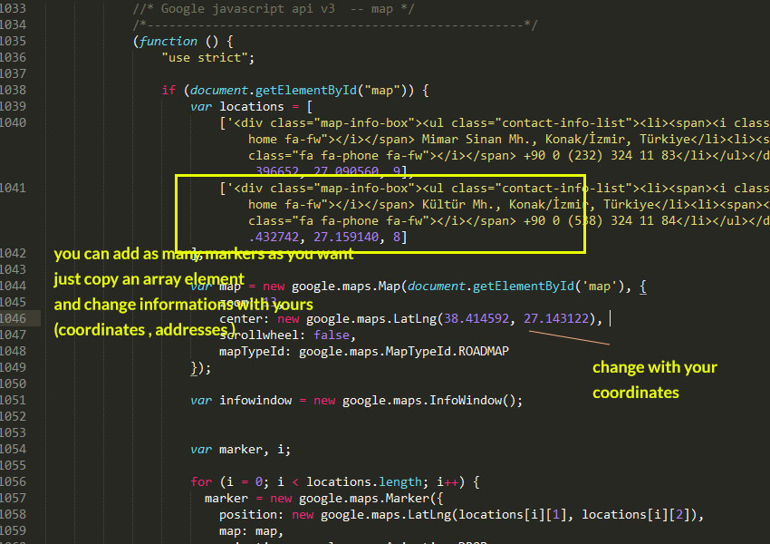
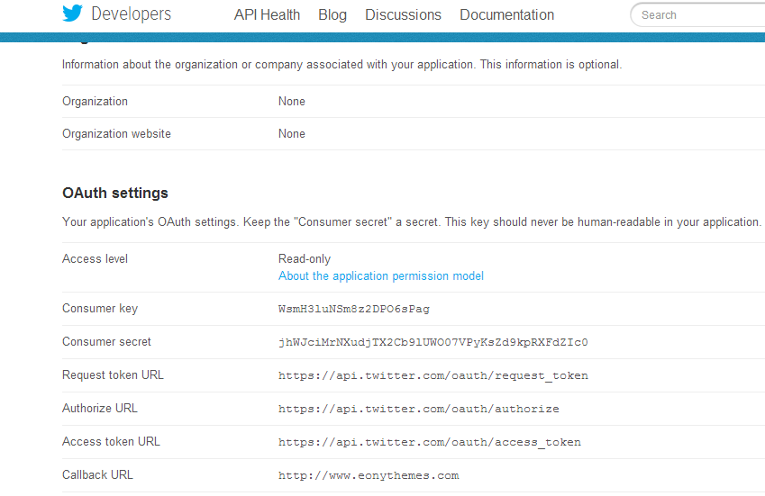
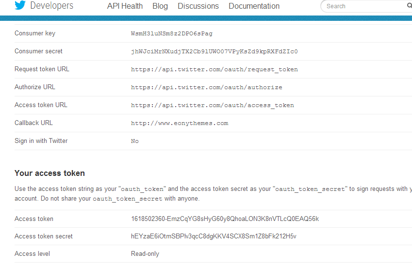
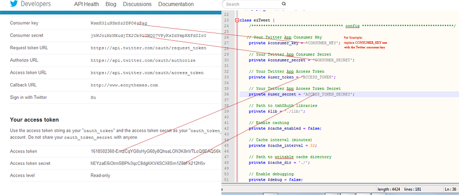
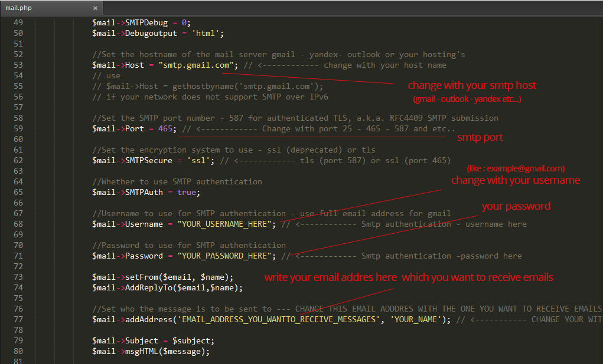
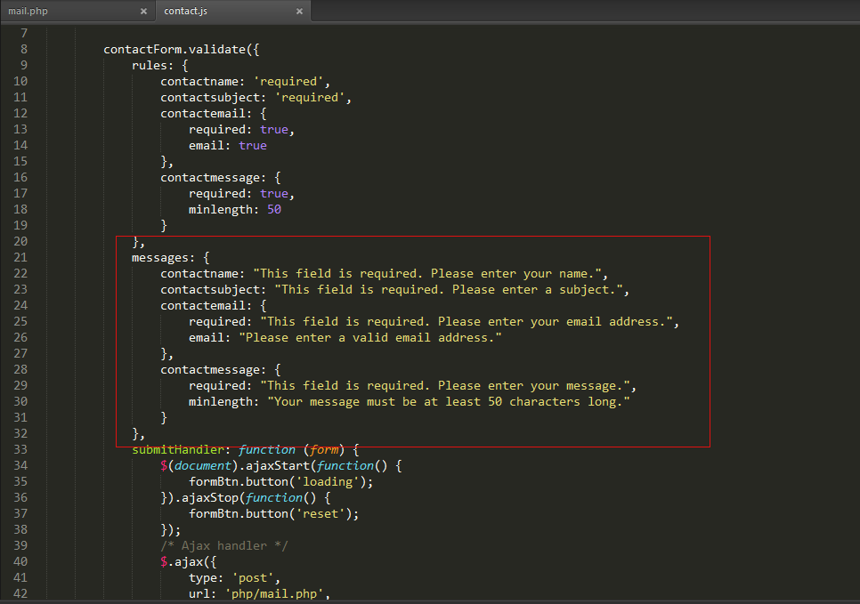
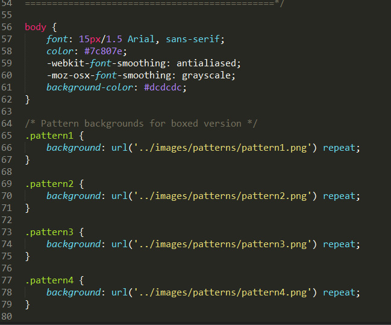

Boss - Multipurpose Template's
Documentation
1 - Getting Started
Thank you for purchasing Boss Template. If you have any questions that are beyond the scope of this documentation file, please feel free to contact me via my user page contact form here.
This is Boss's documentation file. Please read this file carefully before contacting with us for support.
1.1 - Inclueded Files
After downloading Boss template and un-zip it, you will find the following files.
- Boss
- Documentation
- Psds
- Revolution slider documentation
1.2 - Boss Homepages
Boss comes with 35+ homepage variants and some other homepages to show you how flexiable can Boss be.. I added some menu variants, some portfolio variants.
1.3 - Support
If you have a problem or found a bug or want to ask something about template, please feel free to contact me from my puffde@gmail.com address.
2 - Html
Boss is based on the Bootstrap framework. All html codes are valid, commented and well coded for your best interest. This files are coded with Html5 new features/tags. (like header,footer, nav etc..) All html markups coded for best seo practices.
Comment example:<section id="content">
<p>This is content<p/>
</section><!-- End #content -->>
3 - Css
This is the part where Css files are explained.
3.1 - General
All css files are tested, commented and well-coded. Style.css file is the main css file of the Boss. Other files are listed below...
- bootstrap.min.css - Bootstrap Framework css file
- fontawesome.min.css - Fontawesome font icon's css file
- simple-line-icons.css - Simple line font icons
- bootstrap-switch.css - Bootstrap switch css file
- style.css - Main css file
- jquery.selectbox.css - For custom selects (jquery plugin styles)
- animate.css - Awesome css animate css file
- fonts.css - Fonts css file
- bootstrap-datetimepicker.css - Bootstrap Datetimepicker plugin
- YTPlayer.css - For Youtube video background (jquery plugin styles)
- magnific-popup.css - Lightbox plugin Css file
- vspacing.css - This is a helper css file to make vertical spacing easier
- mediaelementplayer.css
- revslider.css - Premium Revolution slider's css file
- jquery.kwicks.css - Jquery Plugin (used for index16.html home section)
- Revslider Folder - All revolutions slider css files in here.
- Skins folder - For now this folder has just 1 css file to make fonts lighter.
3.2 - Revslider (Folder) Css Files
This folder contains all revolutions sliders related css files. All homepages and about pages slider stylesheets are placed in this folder.
- Example:revslider-index2.css file used in index2.html (main slider)
- Example:revslider-aboutme.css file used in aboutme4.html (main slider)
3.3 - Colors (Folder) Css Files
This folder contains all color schemes related css files. There are total 12 prdefined color schemes. You can easly copy on of them and change color hex values to create your own color schemes.
List of Predefined Color Stylesheets: (You can find hex values of colors at the top of the css file.)
- green.css - This is the main color scheme
- blue.css
- brown.css
- brown2.css
- gold.css
- green2.css
- lightblue.css
- darkblue.css
- purple.css
- samon.css
- seagreen.css
- violetred.css
How to change color scheme css file:
--- Open html file with you text editor and find the line below and change green.css name with the new one <link rel="stylesheet" id="color-scheme" href="css/colors/green.css>
3.4 - Skins (Folder) Css Files
There is just one file in this folder for now. With the updates I will add more skins. This file is lightfonts.css. Basically, this file makes bold fonts lighters. Just add this file after style.css file. And see the differances.
Example: This file used in index8.html file.
4 - Javascript
This is the part where javascript files are explained.
To make template faster i concated all plugins in plugins.js file. So you can find all plugins in this file.
4.1 - General Javascript
All codes are commented and well coded. Id you want to change something, please be careful. If you are not sure what you are doing please contact me. So that i can help you.Other than home pages sliders and some others, all javascript/jquery codes are placed at the main.js file.
Caution: For the homepages, home section related js codes are placed at the bottom of the page. Not in the main.js file. For example; you can find call for revolution slider at the bottom of the index.html file.
/* index27.html - Popular Products */
$('.owl-carousel.shop-popular-carousel').owlCarousel({
loop:false,
margin:20,
responsiveClass:true,
nav:true,
dots: false,
autoplay: true,
autoplayTimeout: 10000,
responsive:{
0:{
items:1
},
480: {
items:2
},
768: {
items:3
},
992: {
items:4
},
1200: {
items:5
}
}
});
4.2 - Google Map
You can find google maps related javascript coe at the bottom of the page. Just the change informations with yours. (coordinates, addresses)
4.3 - Twitter Feed
- Step 1: Go to Twitter Dev Page. ( You must sign in)
- Step 2: Click to the Create a new application button.
- Step 3: Fill the inputs and then click to the Create your Twitter application button.
- Step 4: Now you will see a page like this. 
- Step 5: Scroll down and Click to the Create my access token button. ( Click couple of times until you see created information box )
- Step 6: Now you will see a page like this. 
- Step 7: Open Boss Template folder, open js folder and then twitter folder. Open index.php file with any text editor. And Scroll down find these variables. Starts about 25. lines... And change its values with your new created keys.
// Your Twitter App Consumer Key private $consumer_key = 'CONSUMER_KEY'; // Your Twitter App Consumer Secret private $consumer_secret = 'CONSUMER_SECRET'; // Your Twitter App Access Token private $user_token = 'ACCESS_TOKEN'; // Your Twitter App Access Token Secret private $user_secret = 'ACCESS_TOKEN_SECRET'; - Step 8: After changing keys. Go back to js folder. And open main.js file with your text editor.
- Step 9: Find Twitter Feed Plugin section and change query with whatever you want search from Twitter.
- Step 10: Done... Refresh your page enjoy :)
4.4 - Flickr Feed
Go to Flickridgtrr. And get your Flickr id number. Go to js folder and open main.js file. Find Flickr feed section. And change id with your new id.
$('ul.flickr-feed-list').jflickrfeed({
limit: 6,
qstrings: {
id: 'xxxxxxxxxxxx' -- Change xxxxxxxxxxxx with your new id
}
}
4.5 - Contact Form (v1.0.5)
How to use conract form?
You need a server to make it work, it should work even on a local server. How to make it work: First you need to open php/mail.php file with your text editor. And change placeholder informations with your informations. Plese see image below to learn how.
If you want to use a gmail smtp server like i do, you just need to change Username and password with your gmail username and password.
Caution:If you have a problem with gmail settings, please make sure to go this page and find out what you need to change.
How to change error messages or translate?
To change error messages you need to open js/contact.js file with your text editor and make the changes you want.
name - subject - email - message inputs are required. lastname input and checkbox are not. If you want to change required inputs please visit jquery.validate plugins documentation on their website. It is really easy to understand and change. You just need to change some variables in contact.js file
If you have any problem, please feel free to contact me.
5 - Credits
Some resources that used in Boss Template.
- Pixabay
- Pixeden
- Freepik
- Flat icon
- jQuery
- Bootstrap Framework
- Skrollr Plugin(For parallax background)
- Freepik
- Simple Line Icons
- Bootstrap Date Time picker
- Imagesloaded Plugin
- Bootstrap Switch
- Jquery Backstretch plugin
- Jquery Knob plugin
- Ytplayer jquery plugin
- Supersized Plugin
- Magnific Popup (Plugin for lightbox)
- Revolution Slider (Buyed 1 extended license - Save $14)
- Owl Carousel 2
- Selectbox Plugin (Plugin for custom selectbox)
- Isotope Plugin (Portfolio filter/sort - magical layouts plugin - Developer License $25)
- Retina.js (RDR)
- Waypoint Plugin
- Smart Resize
- Modernizr (Custom download - Some plugins required Modernizr)
- jflickrfeed (Flickr Feed Plugin)
- Tweet.js (Twitter Feed Plugin)
- Google Fonts
- Wow.js
- Query loader plugin
- Typed Js
- Preview Images (Not inclueded within the download file)
- Preview Images (Not inclueded within the download file)
- Subtle Patterns (Awesome background patterns)
- Subtle Google Map (Awesome styled google maps)
- Flexslider 2
- Jquery Kwicks Plugin
- Jquery Vmap
- jquery validate plugin
- PhpMailer
6 - Updates
Date : [ Soon ] - 1.1 - Update See item description for new features Also SASS(SCSS) + gulp files will be added Let me know if you request a new feature. Thanks.
Date : [ 20.01.2016 ] - 1.0.6 - Update + Updated Bootstrap 3.3.6 + Updated Font awesome 4.5.0 + Updated Twitter feed plugin (js/twitter folder - activated cache) + Updated Jquery 2.2.0 + Updated Revolution Slider 4.6.7 + Removed role="search" attribute to fix validation error + Added google fonts at html header tag instead of using import at style.css
Date : [ 05.10.2015 ] - 1.0.5 - Update + Added functional ajax contact form Change Log -- Added php folder(4 php files) -- Added jquery.validate.min.js and contact.js in js folder -- Addded 3 new styling to css file (line 11623 - 11637) -- Changed html files -- ** (Just changed contact forms and contact-form widgets(footer) and included jquery.validate.js and contact .js) ** index.html footer5.html footer6.html index2.html-footer index5.html - footer index6.html -done index10.html - footer index11.html - footer index19.html - footer index22.html - footer index23.html - footer index26.html - footer index29 -35.html contact1-10.html aboutme4.html - footer testimonials.html - footer testimonials2.html team2.html footer
Date : [ 17.09.2015 ] - 1.0.4 - Update + Fixed Tablet Menu problem + Fixed Small Css Problems
Date : [ 14.09.2015 ] - 1.0.3 - Update + Small fixes
Date : [ 8.09.2015 ] - 1.0.2 - Update + Updated Style.css file - Fixed google font loading error for directory path. (added http: for google fonts)
Date : [ 31.08.2015 ] - 1.0.1 - Update + Added 11 new color schemes + Updated Documentation - Fixed Small Css bugs
Date : [ 25.07.2015 ] - 1.0 - Release
** If you find a bug, please feel free to contact us so that I can provide better products for you.
7 - FaQs
Q : Customization..
A : Sorry to say this but I do not provide customization for free. I try to help you as much as I can for small changes. Otherwise you should consider for hiring me or another developer to make the changes you want.
Q : Wordpress - Style.css missing error..
A : This is not a wordpress theme. This is a 'Html template'! You can not upload this file to wordpress and expect it to work as it is. It will not work.
Q : How to Change Layout to Boxed?
A : Open html files with your text editor search for wrapper id. And add class "boxed" or "boxed-long" to make layout boxed.
// Find wrapper id and add class boxed or boxed-long like below <div id="wrapper" class="boxed"> or <div id="wrapper" class="boxed-long">
If you want to make it via javascript: (This way you don't have to edit all html files)
// Open main.js file scroll bottom of the code and add the code below
$(function() {
$('#wrapper').addClass('boxed'); // boxed or boxed-layout
});
Q : How to change background color or add a pattern?
A : To add pattern to your background or to change background color. You need to use one of the boxed layouts. Open css folder and find style.css file. If you want to change background colour. Find body element than change backgrond-color.
To add pattern. You change open html files and add pre-defined classes ( patter1-pattern30 ) to the body element. Or you can open style.css file and copy pattern classes' background to the body's background.
Or you can use these codes to change backgrounds. Open main.js file and use these codes below.
// background color
$('body').css('background-color', 'YOUR_COLOR_HERE'); // Just change YOUR_COLOR_HERE with any color - green, yellow,white or color code #fff, rgba(255, 255, 255) -- like so.
or
/* You can coose classes from pattern1 to pattern30, There are predefined 30 classes for pattern background */
$('body').addClass('pattern10'); // Copy this code to main.js file